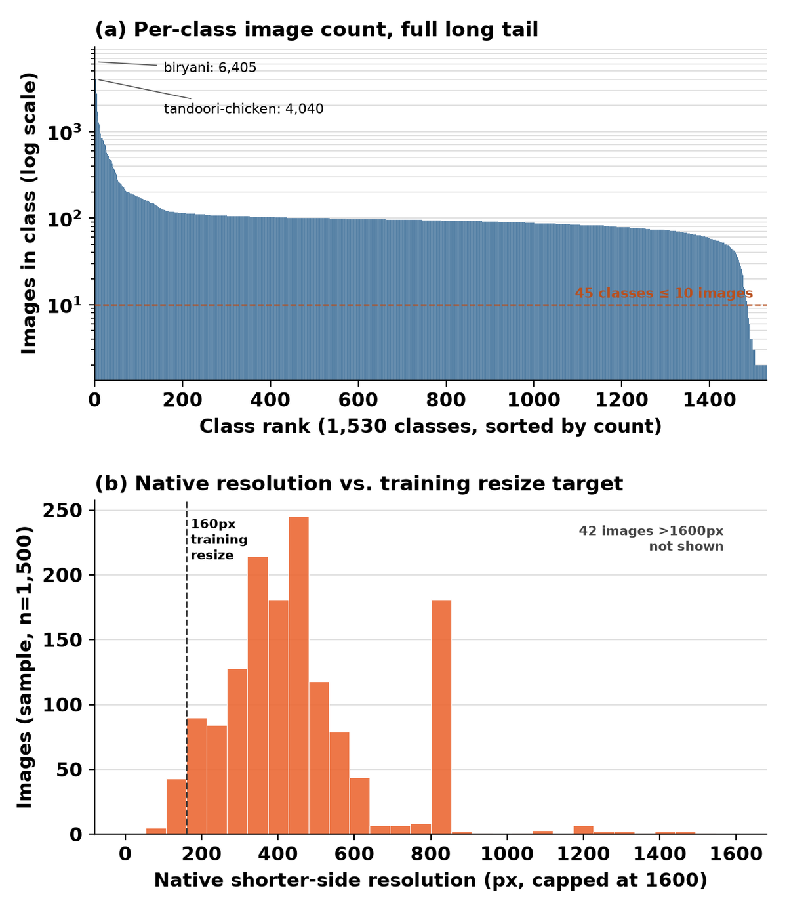
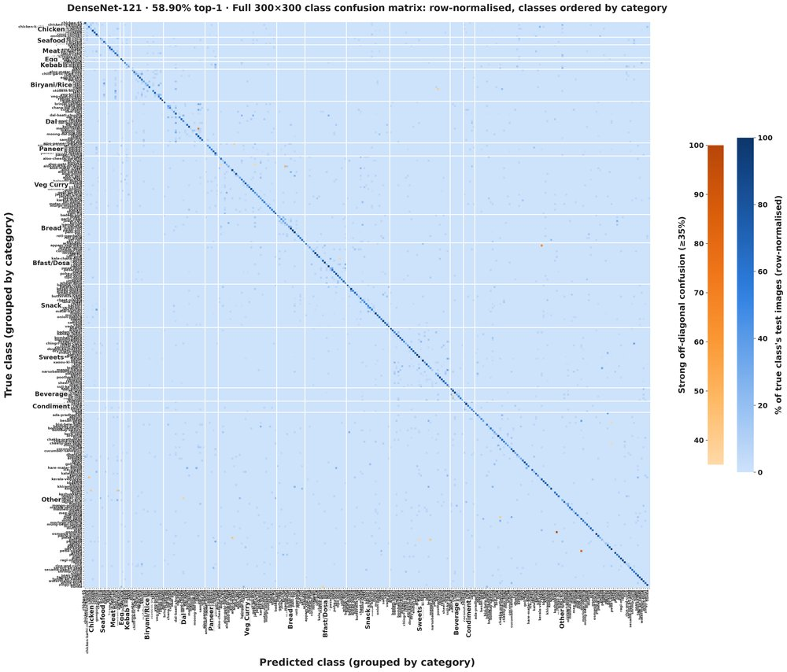

KhanaKhazana: A Large-Scale Indian Food Dataset and Fine-Grained Classification Benchmark

Abstract
Automated food recognition from a photograph enables passive dietary monitoring, with value for chronic-disease management, fitness tracking, drug-trial compliance monitoring, and large-scale nutritional epidemiology. The regional diversity of Indian cuisine places distinct dish names in the thousands, creating a fine-grained recognition problem with no equivalent in food-vision benchmarks. Our paper presents the first study of Indian food classification at this scale. We introduce KhanaKhazana, a dataset of 1,760 dish classes and 210K images, an order of magnitude larger in label space than prior Indian food datasets, providing a data foundation at a vocabulary scale matching India's regional cuisine. Although the corpus spans 1,760 classes, a single restaurant, mess, or nutrition study needs only a few hundred concurrently, so we benchmark accordingly, i.e. fine-tuned CNNs from 100 to 1,700 classes (300 as the primary scale), frozen DINOv3 and Perception Encoder features, eight zero-shot vision-language models (CLIP through GPT-4o), and a human baseline.
Across nine fine-tuned CNNs spanning a 25× parameter range, data quality dominates both data quantity and backbone capacity. Removing non-food noise outperforms every fine-tuned backbone change. A controlled experiment shows that larger vocabularies lower accuracy and more images per class raise it, independently, and frozen self-supervised and vision-language encoders with a linear head lift the 300-class plateau from 58.9% to 75.7%. The best zero-shot VLM does not close the gap to our models, and a human baseline confirms the task is hard for people, not only for models. We further integrate the classifier into an existing thali plate-analysis pipeline, lifting dish identification from 84.51% to 99.50% with unchanged weight-estimation error.
The Dataset

Representative dishes from 24 of the 1,760 classes. Similar colors and plating across semantically distinct dishes make 300-class Indian food recognition hard for classifiers, VLMs and humans alike.

(a) Images per class, sorted by rank: a heavy long tail. (b) Native resolution sits well above the training size, so resolution is not the constraint.

300-class confusion matrix (DenseNet-121), grouped by macro-category. Most strong confusions are near-duplicate dish names rather than recognition failures.

End-to-end thali plate analysis: segmentation (top), and our dish labels with estimated weight and nutrition (bottom).
Building KhanaKhazana
KhanaKhazana is a near-exhaustive crawl of the Indian dish vocabulary, including regional specialties from states poorly covered by pan-Indian datasets, such as eromba (Manipur), galho (Nagaland), kosha mangsho (Bengal) and undhiyu (Gujarat). About 900K raw web images were cleaned in four stages:
- OCR-based recovery of images filed under blog names rather than dish names (12,540 relocated).
- Exact deduplication (18,053 removed, 1,710 of them cross-class label conflicts).
- Per-class outlier clustering on image embeddings (46,483 images flagged in 1,216 classes).
- Manual review by three to four annotators (198,336 keep, delete, crop or move decisions).
A further 110,873 non-food images were pruned before they entered the corpus.
Benchmark at 300 Classes
The primary benchmark is Popular-300: the 300 most frequently eaten dishes, 5,591 test images (95% sampling interval on top-1 about ±1.3 points). Fine-tuned and probed models have seen all 300 classes, zero-shot models none.
| Model | Trainable | Top-1 | Top-5 |
|---|---|---|---|
| Reference | |||
| Random chance (1/300) | – | 0.33% | 1.67% |
| Human baseline (66 participants) | – | 33.81% | – |
| Zero-shot vision-language models | |||
| CLIP ViT-B/32 | 0 | 0.22% | 2.28% |
| LLaVA-1.5-7B | 0 | 0.00% | 0.00% |
| Qwen2-VL-2B | 0 | 4.66% | 7.69% |
| Llama-3.2-11B-Vision | 0 | 8.97% | 10.78% |
| InternVL2.5-4B | 0 | 16.35% | 22.52% |
| Qwen2-VL-7B | 0 | 19.05% | 26.42% |
| GPT-4o | 0 | 39.95% | 55.68% |
| Gemini 2.5 Flash Lite | 0 | 48.25% | 70.37% |
| Fine-tuned CNNs (selection) | |||
| DenseNet-121 (ours) | 8M | 58.90% | 84.85% |
| MobileNet-V2 | 3.4M | 58.75% | 84.21% |
| EfficientNet-B3 | 11.5M | 58.04% | 83.24% |
| ResNet-50 | 25M | 57.66% | 83.19% |
| ConvNeXt-Tiny | 27.9M | 51.94% | 78.93% |
| Frozen encoder + linear head | |||
| ViT-S/16 (ImageNet) | 0.1M | 54.01% | 79.45% |
| DINOv3-S/16 | 0.1M | 64.37% | 88.02% |
| PE-Core-B/16 | 0.3M | 68.86% | 91.84% |
| DINOv3-B/16 | 0.2M | 70.93% | 91.95% |
| PE-Core-L/14 | 0.3M | 75.66% | 94.45% |
Frozen-encoder probes are scored on 5,476 of the 5,644 test images. All eleven backbones and three further zero-shot models are in the paper and supplementary.
Key findings
- Fine-tuned backbone capacity is not the constraint. Eight of nine fine-tuned CNNs fall within 4.6 points (54.32–58.90%) across a 25× parameter range.
- Stronger pretraining lifts the plateau. Frozen DINOv3 and Perception Encoder features beat every fine-tuned CNN by 5.5 to 16.8 points with at most 0.31M trainable parameters, and improve with encoder size. The 58% plateau is a property of fine-tuning ImageNet features on fewer than 80 images per class, not a ceiling of the data.
- Cleaning matters more than volume. Adding 2.7× more pseudo-labeled images reduced top-1 by 3 points; pruning 110,873 non-food images recovered it without a single new label.
- Zero-shot VLMs do not close the gap. Gemini 2.5 Flash Lite trails our fine-tuned model by 10.7 points. CLIP falls below chance on transliterated dish names, and LLaVA-1.5 fails to follow the 300-way answer format.
Class Count vs. Images per Class
Across the Popular tiers, class count and images per class change together. Training DenseNet-121 on a fixed number of images per class separates them: doubling the vocabulary from 100 to 200 classes costs 7.6 to 12.7 points at every budget, while more images per class help with diminishing returns.
| Classes | 5 img | 10 | 20 | 30 |
|---|---|---|---|---|
| 100 | 40.40 | 50.66 | 56.71 | 61.89 |
| 200 | 29.39 | 37.93 | 49.07 | 51.49 |
| 300 | 24.85 | – | – | – |
| 600 | 19.07 | – | – | – |
Top-1 (%) at a fixed number of training images per class. Dashes: some classes in the 300- and 600-class tiers have only six training images.
| Tier | Top-1 | Top-5 |
|---|---|---|
| Popular-100 | 75.45% | 93.73% |
| Popular-200 | 65.42% | 88.94% |
| Popular-300 | 58.90% | 84.85% |
| Popular-500 | 48.45% | 76.33% |
| Popular-1000 | 46.03% | 73.38% |
| Popular-1300 | 41.28% | 69.56% |
| Popular-1700 | 37.55% | 65.74% |
DenseNet-121 as the vocabulary grows (selected tiers; full table in the paper). Tiers of 1,000 classes and above use the extended 120-epoch schedule.
Application: Thali Plate Analysis
The classifier drops into the plate-analysis pipeline of Arora et al. (ICVGIP 2025) in place of its prototype-bank KNN. Grounded-SAM-2 segments each dish, our DenseNet-121 identifies it, a regression head estimates the portion weight, and the IFCT-2017 table gives calories, protein, carbohydrate and fat. Dish identification on ITD crops rises from 84.51% to 99.50% (41-class subset of the 50 ITD dishes), with weight-estimation error unchanged at about 14 g MAE.
Data and Code
The repository releases the benchmark code (training, evaluation, frozen-encoder probes, controlled experiments and zero-shot VLM scripts), one config per reported experiment, the class list of every evaluated tier, head / mid / tail frequency groups, per-class accuracy of the 1,700-class model, and the 24 strongest confusion pairs.
Images are not redistributed, because most source images come from restaurant sites and web image search and their licensing is not settled. The corpus is available to researchers on request: write to harith.yerragolam@research.iiit.ac.in (cc jawahar@iiit.ac.in) with your name, affiliation and intended research use.
BibTeX
@inproceedings{yerragolam2026khanakhazana,
title = {KhanaKhazana: A Large-Scale Indian Food Dataset and Fine-Grained Classification Benchmark},
author = {Yerragolam, Harith and Jawahar, C. V.},
booktitle = {Proceedings of the Indian Conference on Computer Vision, Graphics and Image Processing (ICVGIP)},
year = {2026}
}